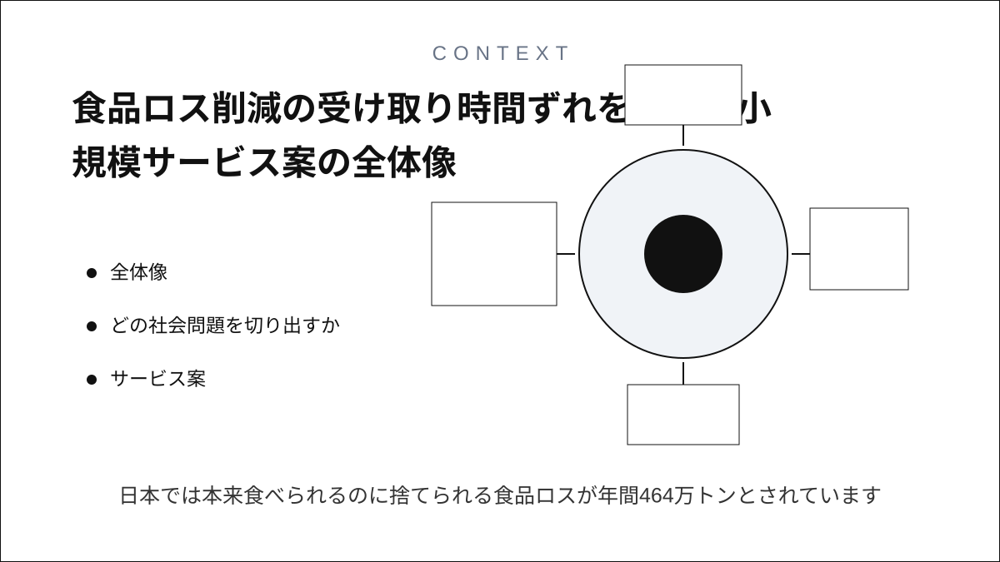
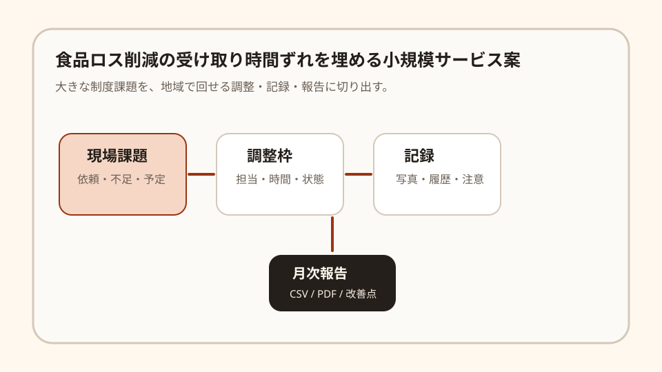
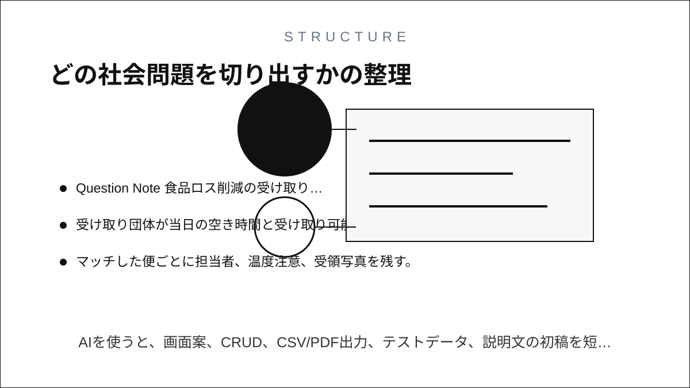
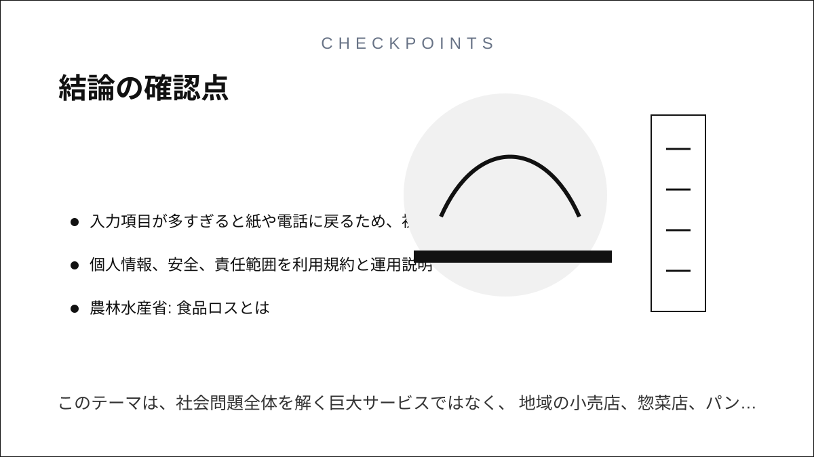

Question Note
食品ロス削減の受け取り時間ずれを埋める小規模サービス案


全体像
日本では本来食べられるのに捨てられる食品ロスが年間464万トンとされています。課題は余剰食品の存在だけではなく、提供できる時間、受け取りに行ける人、温度や期限の記録が合わないことです。
狙いは、社会課題全体を解くことではなく、地域の小売店、惣菜店、パン店、フードパントリーをつなぐ受け取り枠の調整に絞ることです。

どの社会問題を切り出すか
| 現場課題 | 何が起きるか | 既存手段の限界 |
|---|---|---|
| 余剰が出る時刻が直前 | 受け取り側が人を手配できず廃棄になる。 | 電話やチャットでは、期限と担当者の履歴が残りにくい。 |
| 受け取り先が偏る | 一部団体だけに負荷が集まり、継続しにくい。 | 表計算では当日の空き枠と食品カテゴリがつながらない。 |
| 記録が後回し | 温度、数量、期限、配布先の記録が欠ける。 | 一般の在庫アプリは寄付食品の証跡に合いにくい。 |
サービス案
余剰食品の発生見込み、受け取り可能時間、配布団体の空き枠、記録出力を1回単位でそろえるミニ台帳を提供します。
- 店舗が余剰見込みをカテゴリ、数量、期限で登録する。
- 受け取り団体が当日の空き時間と受け取り可能カテゴリを出す。
- マッチした便ごとに担当者、温度注意、受領写真を残す。
- 月末に数量、廃棄回避見込み、配布先をCSVで出す。
- 食品衛生上の注意や期限切れリスクだけを目立たせる。
100万円規模に抑えた市場設定
初年度は1市内の小売店40店と支援団体10団体を到達可能市場とし、その中から18店舗・団体に導入する前提にします。
| 項目 | 仮定 | 結果 |
|---|---|---|
| 到達可能市場 | 1市内の小売店40店と支援団体10団体 | 面談と初期設定を1人で回せる範囲 |
| 初年度導入 | 18店舗・団体 | 紹介、説明会、個別導入で獲得 |
| 月額利用料 | 4,000円 | 864,000円/年 |
| 導入支援 | 8,000円 x 8件 | 64,000円 |
| 初年度売上予想 | 合計 | 928,000円 |
収益モデル
- 基本: 運営団体または地域拠点ごとの月額利用料
- 追加: 初期設定代行、台帳移行、帳票テンプレート作成
- 追加: 地域ネットワーク向け導入説明会
初期は成果報酬よりも、現場の調整時間を減らす固定課金の方が読みやすいです。
必要なシステム要件と支出
| 領域 | 要件・使い道 | 年額の目安 |
|---|---|---|
| フロント | スマホで登録、状態変更、一覧確認ができるWeb画面 | 0円〜 |
| バックエンド | 利用者、依頼、在庫、担当、履歴、権限を管理 | 36,000円 |
| 通知 | メール中心、必要時だけSMSや電話確認に回す | 18,000円 |
| 帳票・記録 | CSV、PDF、月次報告、簡易監査ログ | 18,000円 |
| 運用・専門確認 | ドメイン、バックアップ、説明資料、規約・個人情報確認 | 78,000円 |
| 年間支出 | 合計 | 150,000円 |
AIを使った開発見積もり
AIを使うと、画面案、CRUD、CSV/PDF出力、テストデータ、説明文の初稿を短縮できます。一方で、現場ヒアリング、個人情報や安全面の線引き、受け入れ検証は人が責任を持つ必要があります。
| 作業 | AIで短縮できること | 目安 |
|---|---|---|
| 要件整理 | ヒアリングメモから業務フローと画面項目を整理 | 3〜5日 |
| プロトタイプ | 一覧、登録、状態管理、権限のたたき台を作成 | 1〜2週間 |
| 本実装 | CRUD、通知、帳票、テストデータを補助 | 2〜3週間 |
| 検証・修正 | テスト観点と不具合原因の洗い出し | 1週間 |
1人開発でも、初期版は4〜7週間で作れる想定です。
売上・支出・利益
売上 - 支出 = 利益
| 項目 | 金額 | 補足 |
|---|---|---|
| 売上 | 928,000円 | 月額4,000円 x 18件 x 12か月 + 導入支援64,000円 |
| 支出 | 150,000円 | ホスティング、通知、帳票、説明資料、食品衛生確認 |
| 利益 | 778,000円 | 実行者の作業時間は別途。副業または小規模検証として成立する水準 |
必要人数と人材要件
この規模では、実行者1名 + 単発外注を前提にします。
- 実行者: Webアプリを実装でき、地域団体や現場担当者との面談ができる人
- 補助外注: 会計、法務、個人情報、安全確認、アクセシビリティ点検を単発依頼
- 望ましいスキル: CRUD実装、帳票設計、スマホUI、業務整理、地域連携の調整力
リスクと最初の検証
- 月額課金に見合うほど、現場の調整負荷が減るかを確認する。
- 入力項目が多すぎると紙や電話に戻るため、初期項目を絞る。
- 個人情報、安全、責任範囲を利用規約と運用説明で明確にする。
最初は3拠点、1か月だけ試し、連絡漏れ、記録漏れ、担当者の作業時間が減るかを見ます。
結論
このテーマは、社会問題全体を解く巨大サービスではなく、地域の小売店、惣菜店、パン店、フードパントリーをつなぐ受け取り枠の調整を整える方向に切ると、100万円規模でも成立しやすいです。
